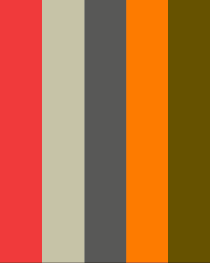

> Sheikh Ridwan
> whoami
Sheikh Ridwan — a builder who codes, designs, and fixes things.
> pwd
/Japan/Maebashi
> cat origin.txt
Born in Bangladesh. Moved to Japan in 2022.
Currently studying IT at 日本おもてなし専門学校.
Fluent in Bengali, English, and Japanese.
// "The best solutions live at the intersection of logic and creativity."
My journey started in Bangladesh, where I co-founded Best Tech Center at 21 — diagnosing hardware, designing customer workflows, and growing it to 50,00,000 BDT in annual revenue. That experience taught me something no classroom ever could: technology only matters when it solves real human problems.
Then I moved to Japan. New language. New culture. New industry. I enrolled at Asahi University to learn Japanese, then joined 日本おもてなし専門学校 for IT — immersing myself in a country where precision and craftsmanship are a way of life.
Along the way, I traded USDT on Binance — executing 516 transactions, managing liquidity under pressure, and learning risk management in a market that never sleeps.
I also founded the International Society of Artists (ISA) — because I believe creativity should be funded, not filtered. We secured scholarships for young artists globally.
Today, I bridge three worlds: development (Node.js, APIs, automation), design (branding, logos, posters), and IT support (hardware, networking, troubleshooting).
> ./strengths.sh
[OK] Practical problem solving — theory is useful, execution wins
[OK] Full-stack operation — code, systems, customers, I handle all layers
[OK] Entrepreneurial ownership — every line of code has business impact
[OK] AI-augmented development — faster without dependency